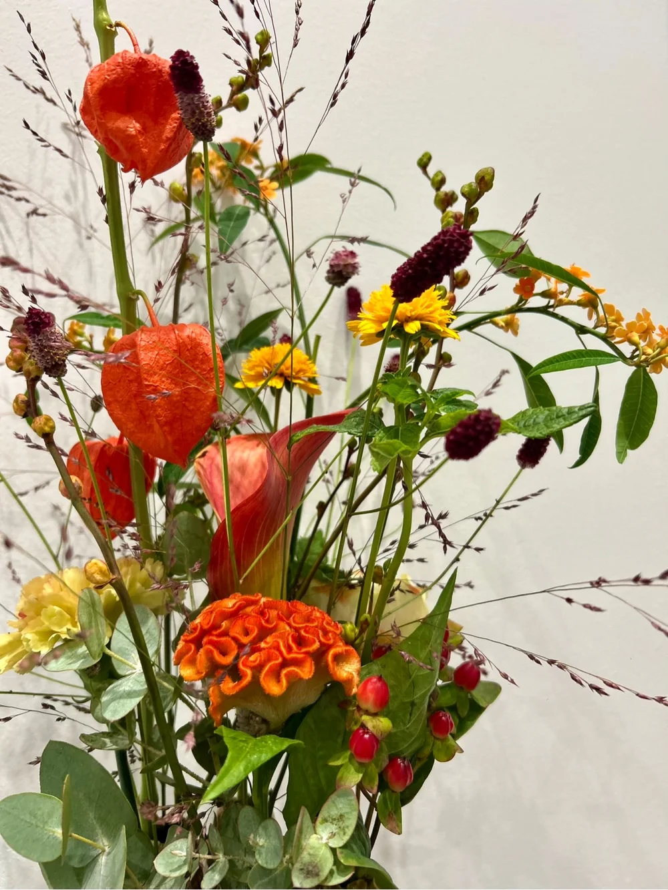
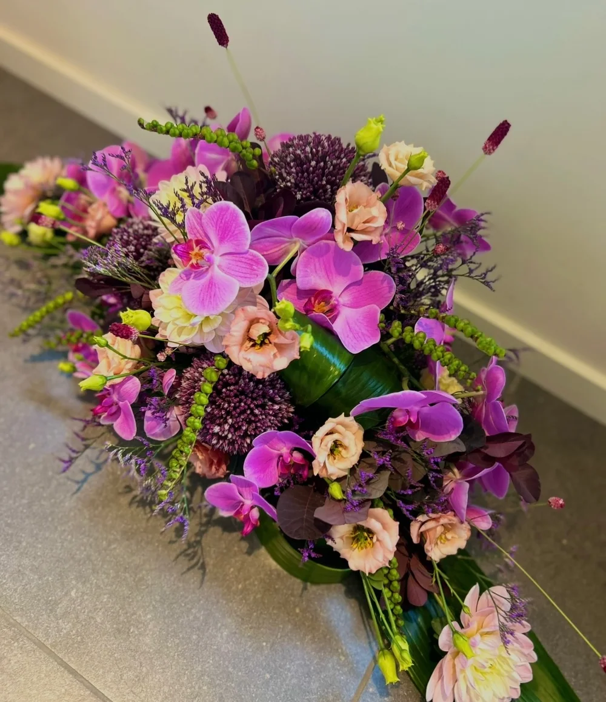
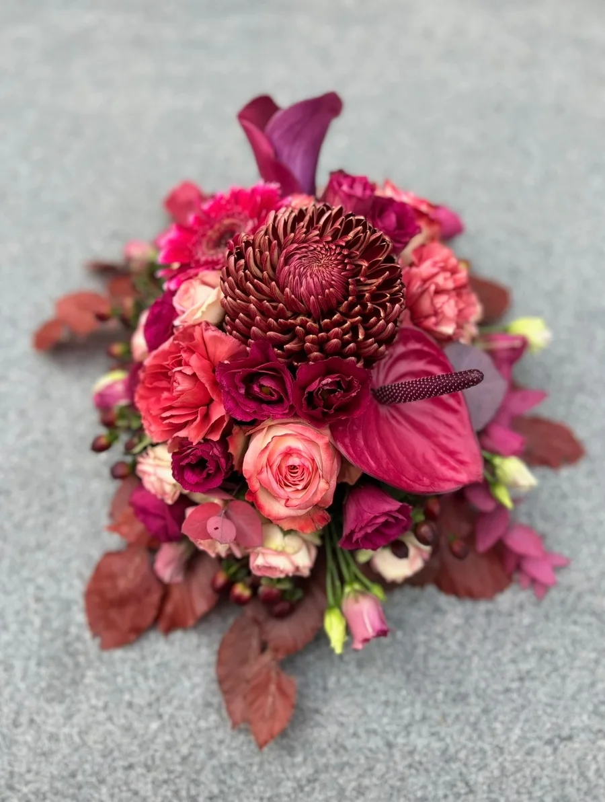
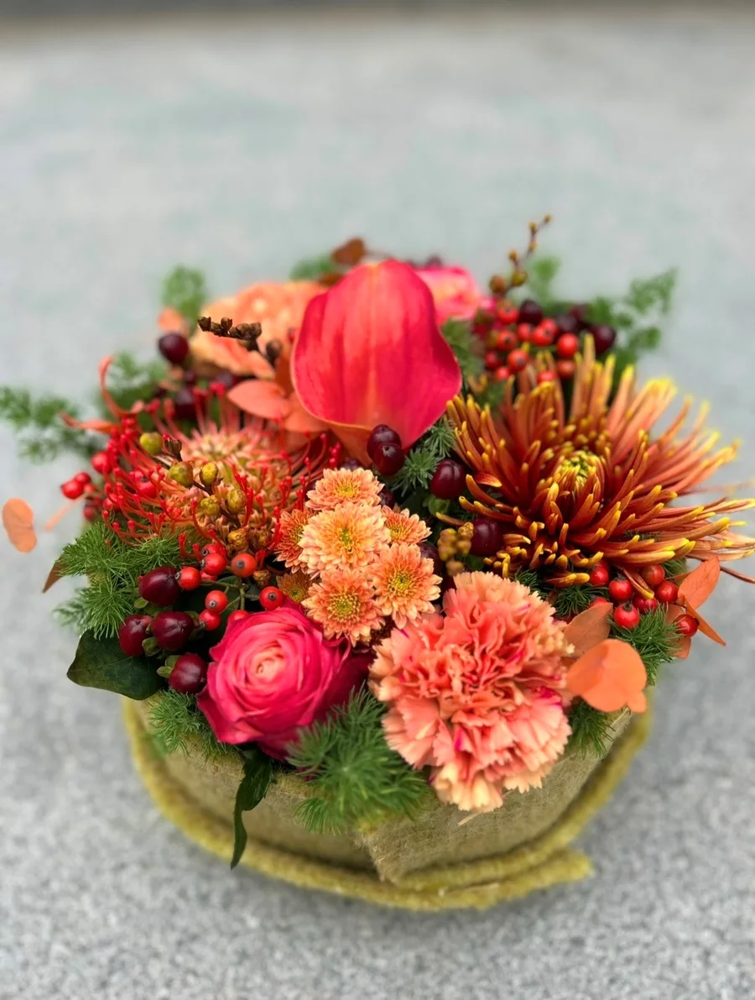
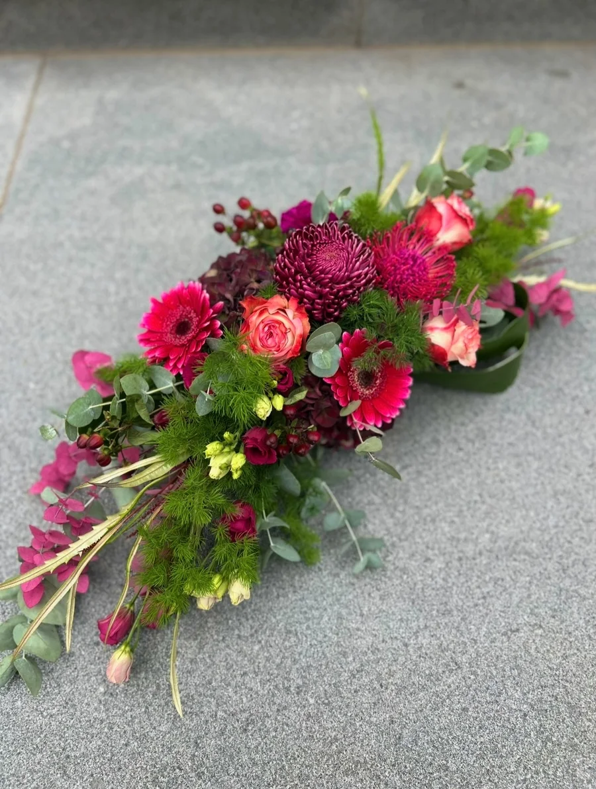
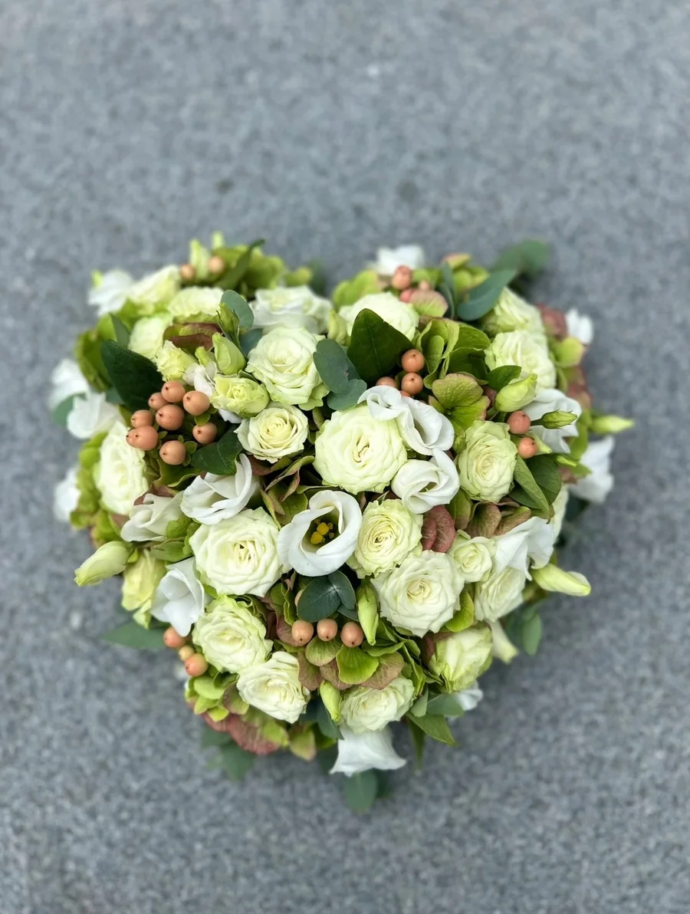
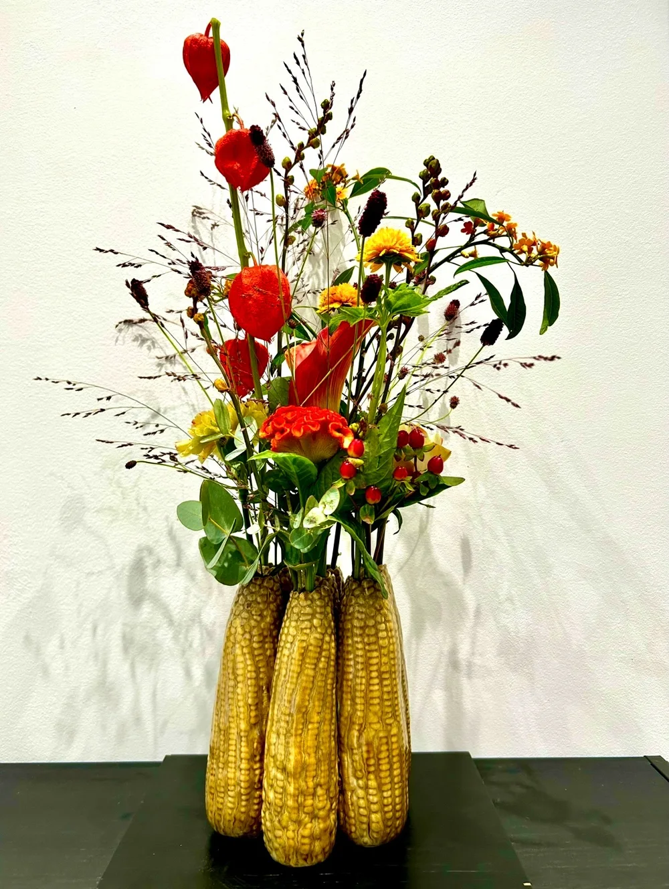
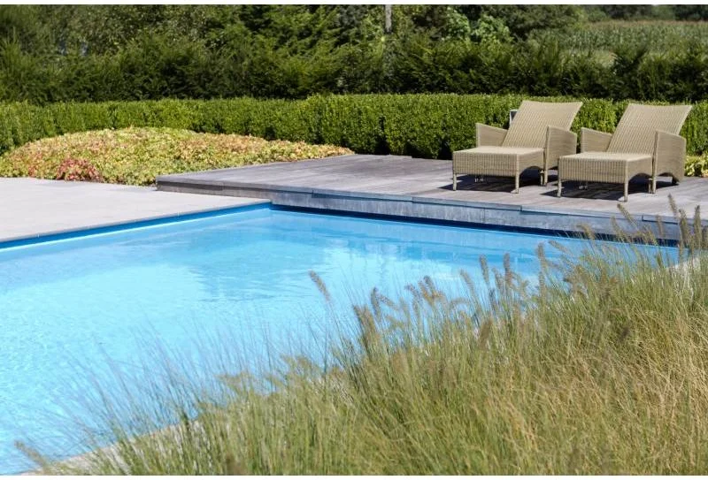
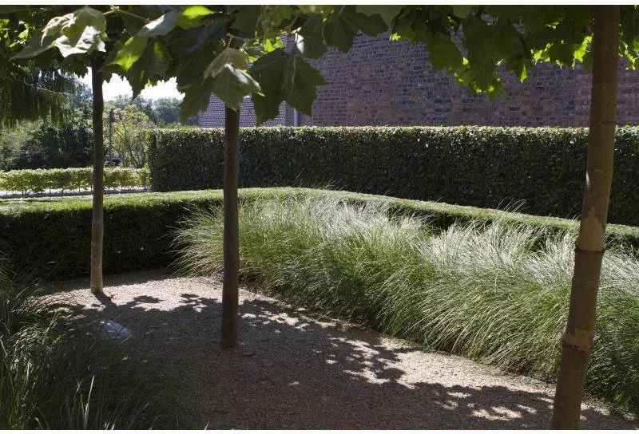
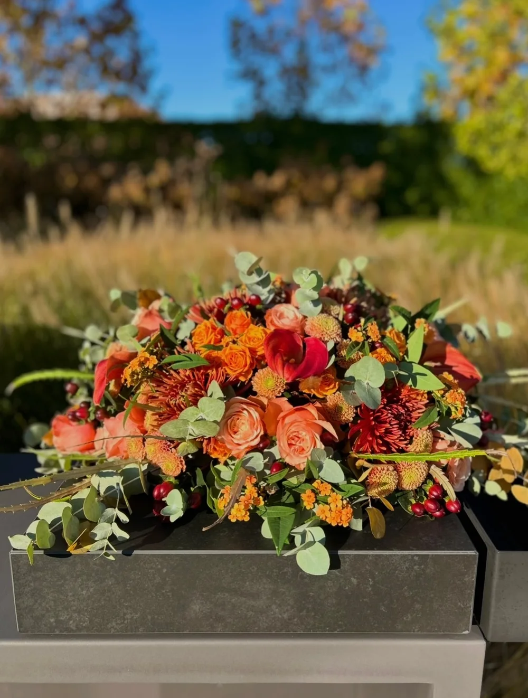

Boeketten
Handgebonden in de winkel, met wat het seizoen op zijn mooist brengt.
Boeketten en bloemstukken op maat, met de mooiste bloemen van het seizoen. En voor buiten: een tuin die we samen met jou ontwerpen, aanleggen en onderhouden.

Voor een speciale gelegenheid, een afscheid of gewoon om iemand te verrassen. Vertel ons waarvoor het is, wij maken er iets moois van.






Dat schreef Katia Humblet op Google. We werken met de beste bloemen van het seizoen, en zoeken op beurzen in binnen- en buitenland naar de mooiste accessoires.
Van een boeket voor op tafel tot het bruidsboeket voor je trouwdag, klassiek handgebonden of net modern.

Handgebonden in de winkel, met wat het seizoen op zijn mooist brengt.

Op maat, voor een feest, een jubileum of gewoon voor op tafel.

Voor een afscheid of een bezoek aan het graf, met veel zorg gemaakt.

Voor je zaak of je huis: een creatie op de balie, in de inkomhal of op de vergadertafel.
Dat geldt ook voor een tuin. Een ontwerp is een samensmelting van jouw wensen en onze ideeën: zo veel mogelijk genieten, zo weinig mogelijk onderhoud.



"Hier worden prachtige boeketten gemaakt. Hele vriendelijke eigenaars en vooral uiterst verse bloemen die zéér lang houden. Absolute aanrader."
Katia HumbletGoogle"Prachtige boeketten en mooie winkel, zeer vriendelijk personeel met veel kennis van het vak! Zeker een aanrader!"
Nanou UyttebroeckGoogle"Altijd opnieuw de prachtigste boeketten."
Tina SomersGoogleDe Costerstraat 41, 3150 Wespelaar (Haacht)Bloemen, planten, decoratie en gelimiteerde kunstobjecten.

Ik maakte deze demo voor jullie om te tonen wat er kan. Na een kort gesprek maak ik er iets veel persoonlijkers van, helemaal naar jullie wens.
Vrijblijvend. Ik kom langs of we bellen.
Op maat, op jullie eigen domein.
Geen voorschot. Jullie betalen pas als alles klaar is.
Hosting, domeinnaam en kleine wijzigingen, zoals nieuwe openingsuren.
Omdat een voorbeeld meer zegt dan een mail. Zo zien jullie meteen wat er kan, en het kost jullie niets.
Nee. Het gesprek is vrijblijvend. Vinden jullie het niks, dan is het daarmee gedaan.
Na ons gesprek staat jullie site binnen 10 tot 14 dagen online.
Zeker. Jullie domeinnaam kan gewoon blijven, de nieuwe site komt in de plaats van de oude.
Nee, dat doe ik op basis van ons gesprek. Eigen foto's zijn mooi meegenomen, maar niet nodig om te starten.